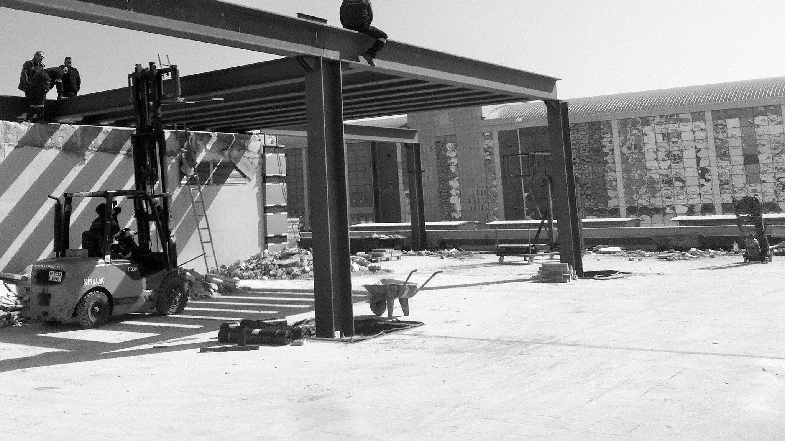
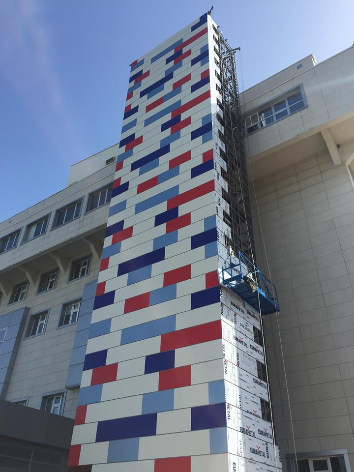

Explore
ÇAĞRI YAPI İNŞAAT LTD. ŞTİ. MURZİOĞLU ŞİRKETLER GRUBU İŞTİRAKİDİR.
Ana Sayfa
ŞİRKET İLE İLGİLİ GENEL BİLGİLER
Kurumsal
BAKIŞ AÇIMIZ. MİSYON VE VİZYONUMUZ
PROJELER
PROJELERİMİZDEN GÖRÜNTÜLER
İLETİŞİM
ADRES İRTİBAT ULAŞIM BİLGİLERİ
Be Social
Connect with Jonathan Ive



Be Social
Connect with Jonathan Ive